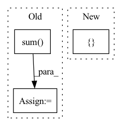

Pattern ID :507

Before Change
G_cls, G_reg = map(item.get, ["proposal_targets_cls", "proposal_targets_reg"])
P_cls, P_reg = map(item.get, ["proposal_scores", "proposal_boxes"])
G_cls, mask_cls = G_cls.split([self.cfg.NUM_CLASSES, 1], dim=1)
mask_reg = G_cls[:, :-1, ..., None].sum(1, keepdim=True)
cls_loss = self.cls_loss(P_cls, G_cls, mask_cls)
reg_loss = self.reg_loss(P_reg, G_reg, mask_reg)
loss = cls_loss + self.cfg.TRAIN.LAMBDA * reg_loss
losses = dict(cls_loss=cls_loss, reg_loss=reg_loss, loss=loss)
After Change
def forward(self, item):
TODO: Decide on cleaner input representation.
keys = ["G_cls", "M_cls", "P_cls", "G_reg", "M_reg", "P_reg"]
G_cls, M_cls, P_cls, G_reg, M_reg, P_reg = map(item.get, keys)
cls_loss = self.cls_loss(P_cls, G_cls, M_cls)
reg_loss = self.reg_loss(P_reg, G_reg, M_reg)
In pattern: SUPERPATTERN
Frequency: 3
Non-data size: 3
Instances
Fragment ID: 1753736
Project Name: jhultman/vision3d
Commit Name: 03a0b92af929371cce91e1666b92f92192e49129
Time: 2020-02-22
Author: 27909223+jhultman@users.noreply.github.com
File Name: pvrcnn/detector/proposal.py
M Class Name: ProposalLoss
N Class Name: ProposalLoss
M Method Name: forward(2)
N Method Name: forward(2)
M Parent Class: nn.Module
N Parent Class: nn.Module
M File Name: pvrcnn/detector/proposal.py
N File Name: pvrcnn/detector/proposal.py
M Start Line: 92
M End Line: 95
N Start Line: 84
N End Line: 85
'>
Before Change
(creators_1d, destroyers_1d), 1
)
source_total_persistence = persistence_0d.pow(2).sum() + persistence_1d.pow(2).sum()
target_total_persistence = _total_persistence(pd_target[0]) + _total_persistence(pd_target[1])
loss = torch.abs(source_total_persistence - target_total_persistence)
return loss
After Change
)
loss = self.loss(
[persistence_diagram_0d, persistence_diagram_1d]
)
return loss
'>
Fragment ID: 1753737
Project Name: aidos-lab/pytorch-topological
Commit Name: d22e852996713c008612ec96df10e82e4ba32186
Time: 2021-12-06
Author: bastian@rieck.me
File Name: pytorch_topological/nn/vietoris_rips.py
M Class Name: ModelSpaceLoss
N Class Name: ModelSpaceLoss
M Method Name: forward(1)
N Method Name: forward(1)
M Parent Class: nn.Module
N Parent Class: nn.Module
M File Name: pytorch_topological/nn/vietoris_rips.py
N File Name: pytorch_topological/nn/vietoris_rips.py
M Start Line: 76
M End Line: 122
N Start Line: 118
N End Line: 128
'>
Before Change
elif self._pooling_func_name == "mean":
out = torch.mean(out, keepdim=True, dim=-1)
elif self._pooling_func_name == "sum":
out = torch.sum(out, keepdim=True, dim=-1)
else:
raise ValueError(f"Pooling function {self._pooling_func_name} is not yet supported!")
// out: (BB, embedding_dim, 1)
After Change
// Pooling
// out: (BB, embedding_dim, NN)
masking_input = {"in_tensor": out.transpose(2, 1)}
if self.use_masking:
masking_input["mask_tensor"] = masking_tensor
out = self.pooling_block(masking_input)["masking_out"]
// output_tensor: (BB, embedding_dim)
'>
Fragment ID: 1753734
Project Name: enlite-ai/maze
Commit Name: 53a9f4e4997b8a5451f14fb57dd6c5cb9becd110
Time: 2021-04-15
Author: office@enlite.ai
File Name: maze/perception/blocks/feed_forward/point_net.py
M Class Name: PointNetFeatureTransformNet
N Class Name: PointNetFeatureTransformNet
M Method Name: forward(3)
N Method Name: forward(2)
M Parent Class: nn.Module
N Parent Class: nn.Module
M File Name: maze/perception/blocks/feed_forward/point_net.py
N File Name: maze/perception/blocks/feed_forward/point_net.py
M Start Line: 93
M End Line: 127
N Start Line: 80
N End Line: 134